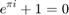

%加入了检测第一个谐振点及反谐振点的算法，以此计算出LF1、LF2及LF3的分界点，需要考虑双峰的情况
function subbands=detectsubbands_v5(casename)
HF1stschpnt=200000; %HF1开始搜索的起始点 HF1endschpnt=50000; %HF1终止搜索的起始点 HF2stschpnt=1000000; HF2endschpnt=800000;

HF1_index=[log10(HF1stschpnt) log10(HF1endschpnt)]; HF2_index=[log10(HF2stschpnt) log10(HF2endschpnt)]; fixedHF1leftpnt=200000; %如果在起始点与终止点之间没有发现二值图像的间断点，则就频域的分段点固定为一个值 fixedHF2leftpnt=1000000; image=imread(strcat('mm_results\',casename,'.tif')); originalimage=strcat('originalimage\',casename,'.tif'); OImage=imread(originalimage); data=load(strcat('data/',casename,'.txt')); f=data(:,1); Origin=data(:,2); Def=data(:,3); mino=min(Origin); maxo=max(Origin); mind=min(Def); maxd=max(Def); min_global=min(mino,mind); max_global=max(maxo,maxd); D=max_global-min_global; flength=length(f); min_f=f(1); max_f=f(flength); frange=max_f-min_f; f_index=[log10(min_f) log10(max_f)]; index_dif=f_index(2)-f_index(1); red=OImage(:,:,1); blue=OImage(:,:,3); Osize=size(OImage); imgheight=Osize(1); imgwidth=Osize(2); local_blue=zeros(1,imgwidth); local_red=zeros(1,imgwidth); for i=1:imgwidth for j=1:imgheight if red(j,i)>240 && blue(j,i)<20 local_blue(i)=j; elseif red(j,i)<20 && blue(j,i)>240 local_red(i)=j; end end end indices1=find(local_blue~=0); indices2=find(local_red~=0); i1length=length(indices1); i2length=length(indices2); fstblue=indices1(1); lastblue=indices1(i1length); fstred=indices2(1); lastred=indices2(i2length); imgstpnt=max(fstblue,fstred); imgendpnt=min(lastred,lastblue); imgHF1stschpnt=ceil(imgstpnt+(HF1_index(1)-f_index(1))*(imgendpnt-imgstpnt)/index_dif); imgHF1endschpnt=ceil(imgstpnt+(HF1_index(2)-f_index(1))*(imgendpnt-imgstpnt)/index_dif); flag=0; flag2=0; for i=imgHF1stschpnt:-1:imgHF1endschpnt for j=1:imgheight if image(j,i)==255 break; end if j==imgheight && image(j,i)==0 flag=2; end end if flag==2 imgHF1leftpnt=i; break; end if flag==0 && i==imgHF1endschpnt flag2=1; end end if flag2==0 HF1leftpnt=10^(f_index(1)+(imgHF1leftpnt-imgstpnt)*index_dif/(imgendpnt-imgstpnt)); elseif flag2==1 HF1leftpnt=fixedHF1leftpnt; end imgHF2stschpnt=ceil(imgstpnt+(HF2_index(1)-f_index(1))*(imgendpnt-imgstpnt)/index_dif); imgHF2endschpnt=ceil(imgstpnt+(HF2_index(2)-f_index(1))*(imgendpnt-imgstpnt)/index_dif); if HF2stschpnt<max_f flag=0; flag2=0; for i=imgHF2stschpnt:-1:imgHF2endschpnt for j=1:imgheight if image(j,i)==255 break; end if j==imgheight && image(j,i)==0 flag=2; end end if flag==2 imgHF2leftpnt=i; break; end if flag==0 && i==imgHF2endschpnt flag2=1; end end if flag2==0 HF2leftpnt=10^(f_index(1)+(imgHF2leftpnt-imgstpnt)*index_dif/(imgendpnt-imgstpnt)); elseif flag2==1 HF2leftpnt=fixedHF2leftpnt; end else HF2leftpnt=fixedHF2leftpnt; end %找出origin的极点和零点 [pole,zero]=detectpoleandzero_v2(casename); fstpole=pole(1,1); fstzero=zero(1,1); sndzero=zero(1,2); if fstzero<sndzero LF1rightpnt=(fstzero+f(1))/2; LF2rightpnt=(fstzero+fstpole)/2; elseif fstzero>sndzero LF1rightpnt=(sndzero+f(1))/2; LF2rightpnt=(sndzero+fstpole)/2; end LF1=[f(1),LF1rightpnt]; LF2=[LF1rightpnt,LF2rightpnt]; MF=[LF2rightpnt,HF1leftpnt]; HF1=[HF1leftpnt,HF2leftpnt]; HF2=[HF2leftpnt,f(flength)]; subbands=[LF1;LF2;MF;HF1;HF2]; divisionpnt=[LF1rightpnt,LF2rightpnt,HF1leftpnt,HF2leftpnt]; figure(1),semilogx(f,Origin,'-k','LineWidth',1.5); hold on; semilogx(f,Def,'--k','LineWidth',1.5); hold on; plot([LF1rightpnt,LF1rightpnt],[-90,10],'c','LineWidth',1); hold on; plot([LF2rightpnt,LF2rightpnt],[-90,10],'c','LineWidth',1); hold on; plot([HF1leftpnt,HF1leftpnt],[-90,10],'c','LineWidth',1); hold on; plot([HF2leftpnt,HF2leftpnt],[-90,10],'c','LineWidth',1); % hold on; % h2=plot([1541.3,1541.3],[-100,0],':k'); % hold on; % plot([13951.6,13951.6],[-100,0],':k'); % hold on; % plot([171734.6,171734.6],[-100,0],':k'); % hold on; % plot([999715.7,999715.7],[-100,0],':k'); % hold on; % h3=plot([1427,1427],[-100,0],':m'); % hold on; % plot([35110,35110],[-100,0],':m'); % hold on; % plot([425178,425178],[-100,0],':m'); % hold on; % plot([719685,719685],[-100,0],':m'); % legend([h1,h2,h3],'本文提出的方法','Velasquez的方法','Gonzales的方法') legend('参考频响曲线','实测频响曲线'); xlabel('f/Hz'); ylabel('幅值/db'); %print(1, '-dtiff', strcat('originalwithdivision/',casename));
输入参数的数目不足。
出错 detectsubbands_v5 (line 20)
image=imread(strcat('mm_results\',casename,'.tif'));